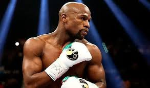

O boxe é um esporte de combate que tem raízes antigas e uma rica história. Surgiu na Grécia Antiga, onde era conhecido como "Pygme" e era uma parte importante dos Jogos Olímpicos. Desde então, o boxe evoluiu em várias formas e tornou-se um esporte amplamente praticado em todo o mundo.
O boxe é muito mais do que apenas um esporte. É uma disciplina que promove valores como disciplina, resiliência, agilidade e autoconfiança. Além disso, o boxe é uma forma eficaz de treinamento físico, ajudando a melhorar o condicionamento cardiovascular, a força e a resistência.
O boxe tem uma comunidade global de praticantes que inclui amadores e profissionais. Milhões de pessoas em todo o mundo treinam boxe como um meio de se manterem em forma, aprender autodefesa e competir em níveis amadores. Além disso, o boxe é um dos esportes de combate mais populares e respeitados em nível profissional, com campeonatos mundiais e ídolos admirados em todo o mundo.
O boxe é muito mais do que simplesmente desferir socos. Envolve uma série de técnicas, incluindo jab, cruzados, uppercuts, movimentos de cabeça e footwork. Os boxeadores também desenvolvem estratégias para superar seus oponentes no ringue, tornando-o um esporte altamente tático.
O boxe deixou uma marca significativa na cultura popular, inspirando filmes, livros e obras de arte. Também tem desempenhado um papel importante na promoção da igualdade de gênero no esporte, com um número crescente de mulheres praticando e competindo no boxe.